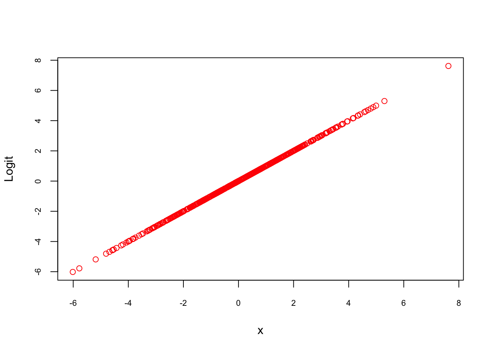
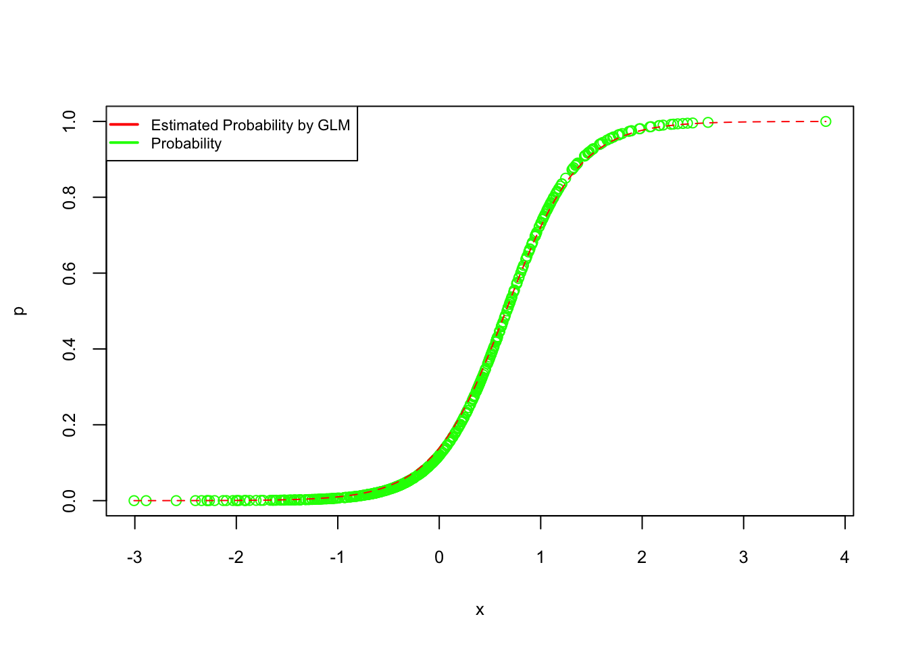

Chapter 9 Parametric Estimations - Basics
9.1 The Dichotomy of Statistical Modeling: Data versus Algorithmic Approaches:
In the realm of statistical modeling, a fundamental dichotomy exists, deeply rooted in the philosophies of data and algorithmic modeling. This section delves into these two distinct cultures, tracing their origins and exploring their implications in the field of statistics, reflecting on the critical insights provided by various experts in their review of Leo Breiman’s influential work in the Special Issue: Commentaries on Breimen’s Two Cultures paper (https://muse.jhu.edu/issue/45147).
The concept of ‘two cultures’ in statistical modeling can be traced back to CP Snow’s seminal work in 1959, which highlighted a divide between traditional and scientific cultures. This idea was further refined by Leo Breiman, a statistician from the University of California Berkeley, in his 2001 publication “Statistical modeling: The two cultures”. Breiman estimated that 98% of statisticians belonged to the data modeling culture, but he advocated strongly for the algorithmic modeling approach.
Data Modeling Culture
Data modeling (Classical Statistical Modeling) assumes a stochastic approach, relying on methodologies like linear regression, logistic regression, or the Cox model. The central focus here is estimating the model’s parameters from the data, with validation achieved through goodness-of-fit tests. This culture values the simplicity and understandability of the relationship between input variables and responses, often leading to the creation of multiple models from which the most suitable is chosen. However, its reliance on parametric models can be a limitation, as these models often struggle to accurately represent complex or high-dimensional data where the underlying model is not well understood or too complicated for simple models.
Algorithmic Modeling Culture
Contrastingly, algorithmic modeling (Machine Learning) views the model as a ‘black box’, emphasizing function estimation and techniques like neural networks and decision trees. This culture prioritizes predictive accuracy over the interpretability of the model. It generally performs better in situations where the relationship between input and output is complex or not well understood, or in handling large datasets. The takeaway here is a focus on finding robust solutions, exploring data thoroughly before modeling, and relying heavily on computers as partners in the modeling process. A significant limitation of this approach is the lack of interpretability; it’s often challenging to understand the reasons behind a model’s predictions, which can be problematic in fields where the rationale is as crucial as the outcome.
Breiman’s Critique
Breiman’s critique of the data modeling culture within the statistical community is multifaceted. He argues that an overemphasis on this approach has not only led to the development of irrelevant theory and, at times, questionable scientific conclusions but has also kept statisticians from adopting more suitable algorithmic models. This adherence to traditional data models, according to Breiman, has constrained statisticians to a limited scope of problems, often resulting in oversimplified solutions that fail to capture the complexity of real-world data. He points out that lessons from algorithmic modeling suggest a preference for multiplicity, where multiple models yield good predictions and where there’s a balance between simplicity and accuracy, especially when dealing with high-dimensional input. Contrary to the data modeling advice that cautions against high-dimensional scenarios, algorithmic modeling leans into this complexity, developing techniques to mitigate the risks of overfitting. Breiman underscores that the primary goal should be the acquisition of accurate information over interpretability, as exemplified in cases like survival data analysis where algorithmic models have demonstrated superior performance to traditional methods. Additionally, he laments that the field’s fixation on data models has precluded statisticians from engaging with exciting new problems that could benefit from algorithmic approaches.
The Contemporary Landscape:
In econometrics, the initial response to Breiman’s paper was one of bafflement, as the field was predominantly focused on causal effects. This causality-based focus led to a de-emphasis on R2 values and a drive to build credible cases for causal effect estimation.
Notable figures like Sir David Cox and Brad Efron contributed their perspectives, with Cox advocating for methodological diversity and cautioning against the mechanical application of models. Efron, while admiring Breiman’s openness to new ideas, questioned the overstated importance of prediction in Breiman’s approach. Breiman responded by clarifying that algorithmic modeling supplements rather than replaces data modeling, and that it has shown significant breakthroughs in complex prediction tasks.
Andrew Gelman provides a critical perspective on Breiman’s work. Gelman critiques Breiman’s dismissal of Bayesian methods, suggesting that despite Breiman’s misconceptions, his broader perspectives and contributions remain valuable. Gelman proposes applying Breiman’s algorithmic perspective to current statistical problems, emphasizing hierarchical modeling, model checking, and black-box computing. He agrees with Breiman on the importance of data usage and notes the effectiveness of modern big-data approaches, such as regularization. Gelman also identifies a division in statistical thinking between complex modeling and reduced-form approaches, observing that both of Breiman’s cultures fall within the complex modeling approach. Gelman proposes applying Breiman’s algorithmic perspective to current statistical problems in areas such as generalizing inference to new predictive problems, model checking, and addressing the challenges of black-box computing. These applications highlight the need to respect the unknown nature of data mechanisms and the importance of continuously improving models based on their fit to the data.
In recent years, there has been a significant convergence of econometrics and machine learning, as explored in the work of Guido Imbens and Susan Athey. Initially, these disciplines seemed to operate in silos, focusing on data analysis without significant interaction. However, recent developments have seen a growing synergy between the two, particularly in the realm of econometrics. Econometricians, who traditionally prioritized causal effect estimation over prediction, have increasingly adopted machine learning algorithms as valuable tools for economic data analysis.
Econometrics has historically emphasized the identification and estimation of causal effects. This focus manifested in methodologies that prioritized building credible cases for causal effect estimation over mere predictive accuracy. In their paper, they presented Two key examples illustrate this approach. First one is Estimating Supply and Demand Functions, and second one is Returns to Education in detail. Imbens and Athey conclude as the integration of machine learning methods into econometric causal modeling has been a game-changer. The adoption of algorithmic machine learning methods has enabled more effective estimation of average treatment effects and treatment effects conditional on observable characteristics. This development has enhanced the accuracy and depth of econometric analyses.
The integration of machine learning in econometrics has been a game-changer, especially in areas such as economics, healthcare and public policy. In healthcare, machine learning methods are being used to estimate treatment effects, particularly in situations where randomized controlled trials are not feasible. The use of machine learning in evaluating the effectiveness of new drugs or medical procedures. By applying advanced algorithms to large healthcare datasets, researchers can control for a wide range of confounding variables, thereby isolating the causal impact of a treatment. Another area where the fusion of econometrics and machine learning has been impactful is in analyzing the effectiveness of environmental policies. For instance, assessing the impact of carbon taxes or cap-and-trade policies on reducing greenhouse gas emissions requires a nuanced understanding of causal relationships in complex economic and environmental systems. Machine learning models, equipped with advanced prediction capabilities, are being integrated with econometric models to analyze the causal effects of these policies. By processing large datasets, including satellite data and emissions records, machine learning algorithms can uncover patterns and relationships that traditional econometric models might miss.
Reflecting on the developments over the past two decades, it is evident that Breiman’s perspective has gained substantial traction. The rise of deep learning and machine learning, particularly in prediction and classification tasks, highlights the increasing prominence of the algorithmic approach. This shift has led to algorithmic modeling contributing insights into various scientific fields and establishing predictive accuracy as a primary tool for model evaluation. there has been considerable progress in merging the machine learning algorithms with econometric methods. Developers of these algorithms have expanded their focus to include causal objectives and restrictions. This expansion has opened new avenues, such as causal discovery, demonstrating a fruitful convergence and mutual enrichment between the two cultures.
In conclusion, the dichotomy between data and algorithmic modeling cultures represents a fundamental aspect of statistical modeling, each with its strengths and limitations. The evolution of these cultures underscores the dynamic nature of statistical methodologies and their impact on our understanding of data in the modern world. This continuous dialogue between different perspectives enriches the field, paving the way for more robust and versatile statistical practices.
** include and clarify citations and quatations in the thext above
http://www2.math.uu.se/~thulin/mm/breiman.pdf
https://www.uio.no/studier/emner/matnat/math/STK9200/h21/two_cultures_pdf.pdf
http://www.stat.columbia.edu/~gelman/research/published/gelman_breiman.pdf
https://muse.jhu.edu/article/799731/pdf
Leo Breiman (Breiman_2001?): Statistical Modeling: The Two Cultures:
The Dichotomy of Statistical Modeling: Parametric vs Nonparametric Models
Leo Breiman’s two cultures in statistical modeling, the data model approach and the algorithmic model approach, have a complex relationship with parametric and nonparametric models. The data model approach often leans towards parametric models, which operate under specific assumptions about the data’s underlying distribution, like normal or binomial distributions. These models, including linear regression, logistic regression, ANOVA, polynomial regression, and Poisson regression, are pivotal in estimating distribution parameters such as mean and standard deviation. They are known for their interpretability and efficiency in making predictions or inferences about the population, especially when the data closely adheres to their underlying assumptions. However, their effectiveness diminishes when these assumptions are violated, potentially leading to biased or inaccurate results.
On the other hand, the algorithmic model approach aligns more closely with nonparametric models, which do not assume a specific distribution for the data. This approach includes flexible and robust techniques such as k-Nearest Neighbors, Spearman rank correlation, kernel density estimation, and Decision Trees like CART. Nonparametric models are particularly useful when the data distribution is unknown or when it does not conform to the assumptions required by parametric models. They are often the preferred choice for handling ordinal or categorical data, or in situations where the assumptions of parametric models are not met. While nonparametric models are celebrated for their adaptability to a wide range of data structures, they can be less efficient and might possess lower statistical power compared to parametric models. These models, which include decision trees and neural networks, are adept at modeling complex, nonlinear relationships that parametric models might struggle with. However, their flexibility comes with the need for larger datasets for effective learning and a general trade-off in interpretability compared to parametric models
It’s important to recognize that the alignments between Leo Breiman’s two cultures in statistical modeling and parametric or nonparametric models are not rigid. The data model approach, which traditionally focuses on inference and understanding the underlying model, can incorporate nonparametric models. Conversely, the algorithmic approach, known for prioritizing predictive accuracy and often treating the model as a black box, can also utilize parametric models, depending on the specific context. This indicates that the decision between parametric and nonparametric models transcends mere preference, evolving into a strategic choice influenced by data characteristics and research objectives. While parametric models excel in estimating parameters within a known probability distribution, offering clarity and efficiency in many scenarios, nonparametric models provide a versatile and flexible alternative, especially valuable when dealing with data that does not conform to specific distributional assumptions or when the distribution is unknown.
9.2 Parametric Estimations
In parametric econometrics we assume that the data come from a generating process that takes the following form:
\[ y=X \beta+\varepsilon \]
Model (\(X\)’s) are determined by the researcher and probability theory is a foundation of econometrics
In Machine learning we do not make any assumption on how the data have been generated:
\[ y \approx m(X) \]
Model (\(X\)’s) is not selected by the researcher and probability theory is not required
Nonparametric econometrics makes the link between the two: Machine Learning: an extension of nonparametric econometrics
To see the difference between two “cultures”, we start with parametric modeling in classification problems.
So far we have only considered models for numeric response variables. What happens if the response variable is categorical? Can we use linear models in these situations? Yes, we can. To understand how, let’s look at the model that we have been using, ordinary least-square (OLS) regression, which is actually a specific case of the more general, generalized linear model (GLM). So, in general, GLMs relate the mean of the response to a linear combination of the predictors, \(\eta(x)\), through the use of a link function, \(g()\). That is,
\[\begin{equation} \eta(\mathbf{x})=g(\mathrm{E}[Y | \mathbf{X}=\mathbf{x}]), \tag{9.1} \end{equation}\]
Or,
\[\begin{equation} \eta(\mathbf{x})=\beta_{0}+\beta_{1} x_{1}+\beta_{2} x_{2}+\ldots+\beta_{p-1} x_{p-1} = g(\mathrm{E}[Y | \mathbf{X}=\mathbf{x}]) \tag{9.2} \end{equation}\]
In the case of a OLS,
\[ g(\mathrm{E}[Y | \mathbf{X}=\mathbf{x}]) = E[Y | \mathbf{X}=\mathbf{x}], \]
To illustrate the use of a GLM we’ll focus on the case of binary responses variable coded using 0 and 1. In practice, these 0 and 1s will code for two classes such as yes/no, committed-crime/not, sick/healthy, etc.
\[ Y=\left\{\begin{array}{ll}{1} & {\text { yes }} \\ {0} & {\text { no }}\end{array}\right. \]
9.3 LPM
Estimate the regression function, which under squared error loss is the conditional mean of \(Y\) , the response, given \(X\), the features. These goal are essentially the same. We want to fit a model that “generalizes” well, that is, works well on new data that was not used to fit the model. To do this, we want to use a model of appropriate flexibility so as not to overfit to the training data.
Linear models are a family of parametric models which assume that the regression function (outcome is known and continuous) is a linear combination of the features. The \(\beta\) coefficients are model parameters that are learned from the data via least squares or maximum likelihood.
A linear classifier (like LPM and Logistic) is one where a “hyperplane” is formed by taking a linear combination of the features, such that one side of the hyperplane predicts one class and the other side predicts the other. nonparametric classifier such as knn
Let’s use the same dataset, Vehicles, that we used in the lab sections and create a new variable, mpg:
#Inspect the data before doing anything
library(fueleconomy) #install.packages("fueleconomy")
data(vehicles)
df <- as.data.frame(vehicles)
#Keep only observations without NA
dim(df)## [1] 33442 12## [1] 33382 12#Let's create a binary variable, mpg = 1 if hwy > mean(hwy), 0 otherwise
mpg <- c(rep(0, nrow(data))) #Create vector mpg
data2 <- cbind(data, mpg) # add it to data
data2$mpg[data2$hwy > mean(data2$hwy)] <- 1We are going to have a model that will predict whether the vehicle is a high mpg (i.e. mpg = 1) or low mpg (mpg = 0) car. As you notice, we have lots of character variables. Our model cannot accept character variables, but we can convert them into factor variables that give each unique character variable a number. This allows our model to accept our data. Let’s convert them to factor variables now:
for (i in 1:ncol(data2)) {
if(is.character(data2[,i])) data2[,i] <- as.factor(data2[,i])
}
str(data2)## 'data.frame': 33382 obs. of 13 variables:
## $ id : num 13309 13310 13311 14038 14039 ...
## $ make : Factor w/ 124 levels "Acura","Alfa Romeo",..: 1 1 1 1 1 1 1 1 1 1 ...
## $ model: Factor w/ 3174 levels "1-Ton Truck 2WD",..: 28 28 28 29 29 29 29 29 29 30 ...
## $ year : num 1997 1997 1997 1998 1998 ...
## $ class: Factor w/ 34 levels "Compact Cars",..: 29 29 29 29 29 29 29 29 29 1 ...
## $ trans: Factor w/ 46 levels "Auto (AV-S6)",..: 32 43 32 32 43 32 32 43 32 32 ...
## $ drive: Factor w/ 7 levels "2-Wheel Drive",..: 5 5 5 5 5 5 5 5 5 5 ...
## $ cyl : num 4 4 6 4 4 6 4 4 6 5 ...
## $ displ: num 2.2 2.2 3 2.3 2.3 3 2.3 2.3 3 2.5 ...
## $ fuel : Factor w/ 12 levels "CNG","Diesel",..: 11 11 11 11 11 11 11 11 11 7 ...
## $ hwy : num 26 28 26 27 29 26 27 29 26 23 ...
## $ cty : num 20 22 18 19 21 17 20 21 17 18 ...
## $ mpg : num 1 1 1 1 1 1 1 1 1 0 ...Done! We are ready to have a model to predict mpg. For now, we’ll use only fuel.
##
## Call:
## lm(formula = mpg ~ fuel + 0, data = data2)
##
## Residuals:
## Min 1Q Median 3Q Max
## -0.8571 -0.4832 -0.2694 0.5168 0.7306
##
## Coefficients:
## Estimate Std. Error t value Pr(>|t|)
## fuelCNG 0.362069 0.065383 5.538 3.09e-08 ***
## fuelDiesel 0.479405 0.016843 28.463 < 2e-16 ***
## fuelGasoline or E85 0.269415 0.015418 17.474 < 2e-16 ***
## fuelGasoline or natural gas 0.277778 0.117366 2.367 0.0180 *
## fuelGasoline or propane 0.000000 0.176049 0.000 1.0000
## fuelMidgrade 0.302326 0.075935 3.981 6.87e-05 ***
## fuelPremium 0.507717 0.005364 94.650 < 2e-16 ***
## fuelPremium and Electricity 1.000000 0.497942 2.008 0.0446 *
## fuelPremium Gas or Electricity 0.857143 0.188205 4.554 5.27e-06 ***
## fuelPremium or E85 0.500000 0.053081 9.420 < 2e-16 ***
## fuelRegular 0.483221 0.003311 145.943 < 2e-16 ***
## fuelRegular Gas and Electricity 1.000000 0.176049 5.680 1.36e-08 ***
## ---
## Signif. codes: 0 '***' 0.001 '**' 0.01 '*' 0.05 '.' 0.1 ' ' 1
##
## Residual standard error: 0.4979 on 33370 degrees of freedom
## Multiple R-squared: 0.4862, Adjusted R-squared: 0.486
## F-statistic: 2631 on 12 and 33370 DF, p-value: < 2.2e-16What we estimated is LPM. Since \(Y\) is 1 or 0,
\[ E[Y | \mathbf{X}=\mathbf{Regular}]) = Probability(Y|X = \mathbf{Regular}), \]
In this context, the link function is called “identity” because it directly “links” the probability to the linear function of the predictor variables. Let’s see if we can verify this:
## 0 1 Sum
##
## CNG 37 21 58
## Diesel 455 419 874
## Gasoline or E85 762 281 1043
## Gasoline or natural gas 13 5 18
## Gasoline or propane 8 0 8
## Midgrade 30 13 43
## Premium 4242 4375 8617
## Premium and Electricity 0 1 1
## Premium Gas or Electricity 1 6 7
## Premium or E85 44 44 88
## Regular 11688 10929 22617
## Regular Gas and Electricity 0 8 8
## Sum 17280 16102 33382##
## 0 1
## CNG 0.6379310 0.3620690
## Diesel 0.5205950 0.4794050
## Gasoline or E85 0.7305849 0.2694151
## Gasoline or natural gas 0.7222222 0.2777778
## Gasoline or propane 1.0000000 0.0000000
## Midgrade 0.6976744 0.3023256
## Premium 0.4922827 0.5077173
## Premium and Electricity 0.0000000 1.0000000
## Premium Gas or Electricity 0.1428571 0.8571429
## Premium or E85 0.5000000 0.5000000
## Regular 0.5167794 0.4832206
## Regular Gas and Electricity 0.0000000 1.0000000Yes! That’s why OLS with a binary \(Y\) is actually LPM. That is,
\[ Pr[Y = 1 | x=\mathbf{Regular}]) = \beta_{0}+\beta_{1} x_{i}. \]
A more formal explanation is related to how \(Y\) is distributed. Since \(Y\) has only 2 possible outcomes (1 and 0), it has a specific probability distribution. First, let’s refresh our memories about Binomial and Bernoulli distributions. In general, if a random variable, \(X\), follows the binomial distribution with parameters \(n \in \mathbb{N}\) and \(p \in [0,1]\), we write \(X \sim B(n, p)\). The probability of getting exactly \(k\) successes in \(n\) trials is given by the probability mass function:
\[\begin{equation} \operatorname{Pr}(X=k)=\left(\begin{array}{l}{n} \\ {k}\end{array}\right) p^{k}(1-p)^{n-k} \tag{9.3} \end{equation}\] for \(k = 0, 1, 2, ..., n\), where
\[ \left(\begin{array}{l}{n} \\ {k}\end{array}\right)=\frac{n !}{k !(n-k) !} \]
Formula 5.3 can be understood as follows: \(k\) successes occur with probability \(p^k\) and \(n-k\) failures occur with probability \((1-p)^{n−k}\). However, the \(k\) successes can occur anywhere among the \(n\) trials, and there are \(n!/k!(n!-k!)\) different ways of distributing \(k\) successes in a sequence of \(n\) trials. Suppose a biased coin comes up heads with probability 0.3 when tossed. What is the probability of achieving 4 heads after 6 tosses?
\[ \operatorname{Pr}(4 \text { heads})=f(4)=\operatorname{Pr}(X=4)=\left(\begin{array}{l}{6} \\ {4}\end{array}\right) 0.3^{4}(1-0.3)^{6-4}=0.059535 \]
The Bernoulli distribution on the other hand, is a discrete probability distribution of a random variable which takes the value 1 with probability \(p\) and the value 0 with probability \(q = (1 - p)\), that is, the probability distribution of any single experiment that asks a yes–no question. The Bernoulli distribution is a special case of the binomial distribution, where \(n = 1\). Symbolically, \(X \sim B(1, p)\) has the same meaning as \(X \sim Bernoulli(p)\). Conversely, any binomial distribution, \(B(n, p)\), is the distribution of the sum of \(n\) Bernoulli trials, \(Bernoulli(p)\), each with the same probability \(p\).
\[ \operatorname{Pr}(X=k) =p^{k}(1-p)^{1-k} \quad \text { for } k \in\{0,1\} \]
Formally, the outcomes \(Y_i\) are described as being Bernoulli-distributed data, where each outcome is determined by an unobserved probability \(p_i\) that is specific to the outcome at hand, but related to the explanatory variables. This can be expressed in any of the following equivalent forms:
\[\begin{equation} \operatorname{Pr}\left(Y_{i}=y | x_{1, i}, \ldots, x_{m, i}\right)=\left\{\begin{array}{ll}{p_{i}} & {\text { if } y=1} \\ {1-p_{i}} & {\text { if } y=0}\end{array}\right. \tag{9.4} \end{equation}\]
The expression 5.4 is the probability mass function of the Bernoulli distribution, specifying the probability of seeing each of the two possible outcomes. Similarly, this can be written as follows, which avoids having to write separate cases and is more convenient for certain types of calculations. This relies on the fact that \(Y_{i}\) can take only the value 0 or 1. In each case, one of the exponents will be 1, which will make the outcome either \(p_{i}\) or 1−\(p_{i}\), as in 5.4.1
\[ \operatorname{Pr}\left(Y_{i}=y | x_{1, i}, \ldots, x_{m, i}\right)=p_{i}^{y}\left(1-p_{i}\right)^{(1-y)} \]
Hence this shows that
\[ \operatorname{Pr}\left(Y_{i}=1 | x_{1, i}, \ldots, x_{m, i}\right)=p_{i}=E[Y_{i} | \mathbf{X}=\mathbf{x}]) \]
Let’s have a more complex model:
##
## Call:
## lm(formula = mpg ~ fuel + drive + cyl, data = data2)
##
## Residuals:
## Min 1Q Median 3Q Max
## -1.09668 -0.21869 0.01541 0.12750 0.97032
##
## Coefficients:
## Estimate Std. Error t value Pr(>|t|)
## (Intercept) 0.858047 0.049540 17.320 < 2e-16 ***
## fuelDiesel 0.194540 0.047511 4.095 4.24e-05 ***
## fuelGasoline or E85 0.030228 0.047277 0.639 0.52258
## fuelGasoline or natural gas 0.031187 0.094466 0.330 0.74129
## fuelGasoline or propane 0.031018 0.132069 0.235 0.81432
## fuelMidgrade 0.214471 0.070592 3.038 0.00238 **
## fuelPremium 0.189008 0.046143 4.096 4.21e-05 ***
## fuelPremium and Electricity 0.746139 0.353119 2.113 0.03461 *
## fuelPremium Gas or Electricity 0.098336 0.140113 0.702 0.48279
## fuelPremium or E85 0.307425 0.059412 5.174 2.30e-07 ***
## fuelRegular 0.006088 0.046062 0.132 0.89485
## fuelRegular Gas and Electricity 0.092330 0.132082 0.699 0.48454
## drive4-Wheel Drive 0.125323 0.020832 6.016 1.81e-09 ***
## drive4-Wheel or All-Wheel Drive -0.053057 0.016456 -3.224 0.00126 **
## driveAll-Wheel Drive 0.333921 0.018879 17.687 < 2e-16 ***
## driveFront-Wheel Drive 0.497978 0.016327 30.499 < 2e-16 ***
## drivePart-time 4-Wheel Drive -0.078447 0.039258 -1.998 0.04570 *
## driveRear-Wheel Drive 0.068346 0.016265 4.202 2.65e-05 ***
## cyl -0.112089 0.001311 -85.488 < 2e-16 ***
## ---
## Signif. codes: 0 '***' 0.001 '**' 0.01 '*' 0.05 '.' 0.1 ' ' 1
##
## Residual standard error: 0.3501 on 33363 degrees of freedom
## Multiple R-squared: 0.5094, Adjusted R-squared: 0.5091
## F-statistic: 1924 on 18 and 33363 DF, p-value: < 2.2e-16Since OLS is a “Gaussian” member of GLS family, we can also estimate it as GLS. We use glm() and define the family as “gaussian”.
model3 <- glm(mpg ~ fuel + drive + cyl, family = gaussian, data = data2)
#You can check it by comparing model2 above to summary(model3)
#Let's check only the coefficients
identical(round(coef(model2),2), round(coef(model3),2))## [1] TRUEWith this LPM model, we can now predict the classification of future cars in term of high (mpg = 1) or low (mpg = 0), which was our objective. Let’s see how successful we are in identifying cars with mpg = 1 in our own sample.
##
## 0 1
## 17280 16102#In-sample fitted values or predicted probabilities for mpg = 1
#Remember our E(Y|X) is Pr(Y=1|X)
mpg_hat <- fitted(model2)
#If you think that any predicted mpg above 0.5 should be consider 1 then
length(mpg_hat[mpg_hat > 0.5]) ## [1] 14079## [1] 19303This is Problem 1: we are using 0.5 as our threshold (discriminating) probability to convert predicted probabilities to predicted “labels”. When we use 0.5 as our threshold probability though, our prediction is significantly off: we predict many cars with mpg = 0 as having mpg = 1.
And here is Problem 2:
## Min. 1st Qu. Median Mean 3rd Qu. Max.
## -0.7994 0.2187 0.4429 0.4824 0.9138 1.2088The predicted probabilities (of mpg = 1) are not bounded between 1 and 0. We will talk about these issues later. First let’s see our next classification model or GLM.
9.4 Logistic Regression
Logistic Regression Linear vs. Logistic Probability Models, which is better and when? We will briefly talk about it here. You can find a nice summary by Paul Von Hippel here as well (https://statisticalhorizons.com/linear-vs-logistic) (Hippel_2015?).
First, let’s define some notation that we will use throughout. (Note that many machine learning texts use \(p\) as the number of parameters. Here we use as a notation for probability. You should be aware of it.)
\[ p(\mathbf{x})=P[Y=1 | \mathbf{X}=\mathbf{x}] \]
With a binary (Bernoulli) response, we will mostly focus on the case when \(Y = 1\), since, with only two possibilities, it is trivial to obtain probabilities when \(Y = 0\).
\[ \begin{array}{c}{P[Y=0 | \mathbf{X}=\mathbf{x}]+P[Y=1 | \mathbf{X}=\mathbf{x}]=1} \\\\ {P[Y=0 | \mathbf{X}=\mathbf{x}]=1-p(\mathbf{x})}\end{array} \]
An explanation of logistic regression can begin with an explanation of the standard logistic function. The logistic function is a sigmoid function, which takes any real input \(z\), and outputs a value between zero and one. The standard logistic function is defined as follows:
\[\begin{equation} \sigma(z)=\frac{e^{z}}{e^{z}+1}=\frac{1}{1+e^{-z}} \tag{9.5} \end{equation}\]
Let’s see possible \(\sigma(z)\) values and plot them against \(z\).
set.seed(1)
n <- 500
x = rnorm(n, 0,2)
sigma <- 1/(1+exp(-x))
plot(sigma ~ x, col ="blue", cex.axis = 0.7)
This logistic function is nice because: (1) whatever the \(x\)’s are \(\sigma(z)\) is always between 0 and 1, (2) The effect of \(x\) on \(\sigma(z)\) is not linear. That is, there is lower and upper thresholds in \(x\) that before and after those values (around -2 and 2 here) the marginal effect of \(x\) on \(\sigma(z)\) is very low. Therefore, it seems that if we use a logistic function and replace \(\sigma(z)\) with \(p(x)\), we can solve issues related to these 2 major drawbacks of LPM.
Let us assume that \(z = y = \beta_{0}+\beta_{1} x_{1}\), the general logistic function can now be written as:
\[\begin{equation} p(x)=P[Y=1|\mathbf{X}=\mathbf{x}]=\frac{1}{1+e^{-\left(\beta_{0}+\beta_{1} x\right)}} \tag{9.6} \end{equation}\]
To understand why nonlinearity would be a desirable future in some probability predictions, let’s imagine we try to predict the effect of saving (\(x\)) on home ownership (\(p(x)\)). If you have no saving now (\(x=0\)), additional $10K saving would not make a significant difference in your decision to buy a house (\(P(Y=1|x)\)). Similarly, when you have $500K (\(x\)) saving but without having house, additional $10K (\(dx\)) saving should not make you buy a house (with $500K, you could’ve bought a house already, had you wanted one). That is why flat lower and upper tails of \(\sigma(z)\) are nice futures reflecting very low marginal effects of \(x\) on the probability of having a house in this case.
After a simple algebra, we can also write the same function as follows,
\[\begin{equation} \ln \left(\frac{p(x)}{1-p(x)}\right)=\beta_{0}+\beta_{1} x, \tag{9.7} \end{equation}\]
where \(p(x)/[1-p(x)]\) is called odds, a ratio of success over failure. The natural log (ln) of this ratio is called, log odds, or Logit, usually denoted as \(\mathbf(L)\). Let’s see if this expression is really linear.
p_x <- sigma
Logit <- log(p_x/(1-p_x)) #By defult log() calculates natural logarithms
plot(Logit ~ x, col ="red", cex.axis = 0.7)
In many cases, researchers use a logistic function, when the outcome variable in a regression is dichotomous. Although there are situations where the linear model is clearly problematic (as described above), there are many common situations where the linear model is just fine, and even has advantages. Let’s start by comparing the two models explicitly. If the outcome \(Y\) is dichotomous with values 1 and 0, we define \(P[Y=1|X] = E(Y|X)\) as proved earlier, which is just the probability that \(Y\) is 1, given some value of the regressors \(X\). Then the linear and logistic probability models are:
\[ P[Y = 1|\mathbf{X}=\mathbf{x}]=E[Y | \mathbf{X}=\mathbf{x}] = \beta_{0}+\beta_{1} x_{1}+\beta_{2} x_{2}+\ldots+\beta_{k} x_{k}, \] \(~\)
\[ \ln \left(\frac{P[Y=1|\mathbf{X}]}{1-P[Y=1|\mathbf{X}]}\right)=\beta_{0}+\beta_{1} x_{1}+\ldots+\beta_{k} x_{k} \]
\(~\)
The linear model assumes that the probability \(P\) is a linear function of the regressors, while the logistic model assumes that the natural log of the odds \(P/(1-P)\) is a linear function of the regressors. Note that applying the inverse logit transformation allows us to obtain an expression for \(P(x)\). With LPM you don’t need that transformation to have \(P(x)\). While LPM can be estimated easily with OLS, the Logistic model needs MLE.
\[ p(\mathbf{x})=E[Y | \mathbf{X}=\mathbf{x}]=P[Y=1 | \mathbf{X}=\mathbf{x}]=\frac{1}{1+e^{-(\beta_{0}+\beta_{1} x_{1}+\cdots+\beta_{p-1} x_{(p-1)})}} \] \(~\)
The major advantage of LPM is its interpretability. In the linear model, if \(\beta_{2}\) is (say) 0.05, that means that a one-unit increase in \(x_{2}\) is associated with a 5-percentage point increase in the probability that \(Y\) is 1. Just about everyone has some understanding of what it would mean to increase by 5 percentage points their probability of, say, voting, or dying, or becoming obese. The logistic model is less interpretable. In the logistic model, if \(\beta_{1}\) is 0.05, that means that a one-unit increase in \(x_{1}\) is associated with a 0.05 “unit” increase in the log odds, \(\text{log}(P/{(1-P)})\), that \(Y\) is 1. And what does that mean? I’ve never had any intuition for log odds. So you have to convert it to the odd ratio (OR) or use the above equation to calculate fitted (predicted) probabilities. Not a problem with R, Stata, etc.
But the main question is when we should use the logistic model? The logistic model is unavoidable if it fits the data much better than the linear model. And sometimes it does. But in many situations the linear model fits just as well, or almost as well, as the logistic model. In fact, in many situations, the linear and logistic model give results that are practically indistinguishable except that the logistic estimates are harder to interpret. Here is the difference: For the logistic model to fit better than the linear model, it must be the case that the log odds are a linear function of X, but the probability is not.
Lets review these concepts in a simulation exercise:
#Creating random data
set.seed(1) # In order to get the same data everytime
n <- 500 # number of observation
x = rnorm(n) # this is our x
z = -2 + 3 * x
#Probablity is defined by a logistic function
#Therefore it is not a linear function of x!
p = 1 / (1 + exp(-z))
#Remember Bernoulli distribution defines Y as 1 or 0
#Bernoulli is the special case of the binomial distribution with size = 1
y = rbinom(n, size = 1, prob = p)
#And we create our data
data <- data.frame(y, x)
head(data)## y x
## 1 0 -0.6264538
## 2 0 0.1836433
## 3 0 -0.8356286
## 4 0 1.5952808
## 5 0 0.3295078
## 6 0 -0.8204684## y
## 0 1
## 353 147We know that probablity is defined by a logistic function (see above). What happens if we fit it as LPM, which is \(Pr[Y = 1 | x=\mathbf{x}]) = \beta_{0}+\beta_{1} x_{i}\)?
##
## Call:
## lm(formula = y ~ x, data = data)
##
## Residuals:
## Min 1Q Median 3Q Max
## -0.76537 -0.25866 -0.08228 0.28686 0.82338
##
## Coefficients:
## Estimate Std. Error t value Pr(>|t|)
## (Intercept) 0.28746 0.01567 18.34 <2e-16 ***
## x 0.28892 0.01550 18.64 <2e-16 ***
## ---
## Signif. codes: 0 '***' 0.001 '**' 0.01 '*' 0.05 '.' 0.1 ' ' 1
##
## Residual standard error: 0.3504 on 498 degrees of freedom
## Multiple R-squared: 0.411, Adjusted R-squared: 0.4098
## F-statistic: 347.5 on 1 and 498 DF, p-value: < 2.2e-16#Here is the plot Probabilities (fitted and DGM) vs x.
plot(x, p, col = "green", cex.lab = 0.7, cex.axis = 0.8)
abline(lpm, col = "red")
legend("topleft", c("Estimated Probability by LPM", "Probability"), lty = c(1, 1),
pch = c(NA, NA), lwd = 2, col = c("red", "green"), cex = 0.7)
How about a logistic regression?
##
## Call:
## glm(formula = y ~ x, family = binomial, data = data)
##
## Coefficients:
## Estimate Std. Error z value Pr(>|z|)
## (Intercept) -1.8253 0.1867 -9.776 <2e-16 ***
## x 2.7809 0.2615 10.635 <2e-16 ***
## ---
## Signif. codes: 0 '***' 0.001 '**' 0.01 '*' 0.05 '.' 0.1 ' ' 1
##
## (Dispersion parameter for binomial family taken to be 1)
##
## Null deviance: 605.69 on 499 degrees of freedom
## Residual deviance: 328.13 on 498 degrees of freedom
## AIC: 332.13
##
## Number of Fisher Scoring iterations: 6#Here is the plot Probabilities (fitted and DGM) vs x.
plot(x, p, col = "green", cex.lab = 0.8, cex.axis = 0.8)
curve(predict(logis, data.frame(x), type = "response"), add = TRUE, col = "red", lty = 2)
legend("topleft", c("Estimated Probability by GLM", "Probability"), lty = c(1, 1),
pch = c(NA, NA), lwd = 2, col = c("red", "green"), cex = 0.7)
As you can see, the estimated logistic regression coefficients are in line with our DGM coefficients (-2, 3).
\[ \log \left(\frac{\hat{p}(\mathbf{x})}{1-\hat{p}(\mathbf{x})}\right)=-1.8253+2.7809 x \]
Intuitively, when \(n=1\), achieving head once (\(k=1\)) is \(P(head)= p^{k}(1-p)^{1-k}=p\) or \(P(tail)= p^{k}(1-p)^{1-k}=1-p.\)↩︎